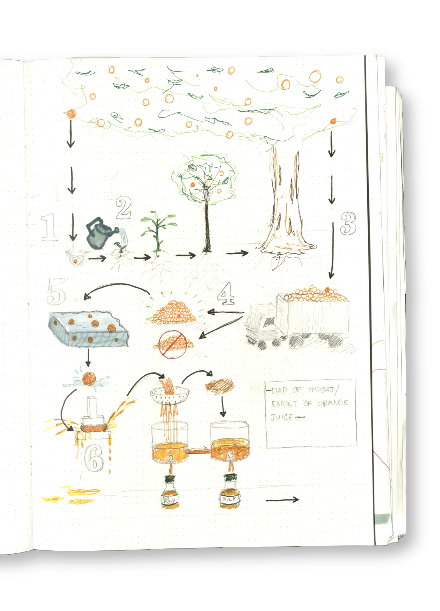
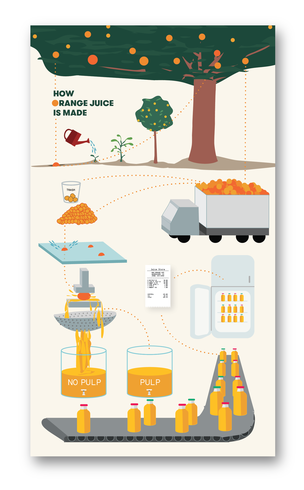

<!DOCTYPE html>
<html>
<head>
    <link href="https://fonts.googleapis.com/css?family=Crimson+Text" rel="stylesheet">

    <style>
        #main{
            float:center;
            margin: auto;
        }
        body {
            font-family: 'Crimson Text', serif;
            font-size: 20px;
            font-weight:500;
        }
        .itemwrapper {
            display: table-cell;
            vertical-align: top;
            width: 100%;
        }
        img {
            max-width: 100%;
            height: auto;
        }
    </style>

</head>
<body>
    <div style = "display:table-row;">
    <a href="index.html">
        
    </a>

    <a href="https://www.linkedin.com/in/mark-sejourne/">
        
    </a>
    </div>

    <div id = main>
        
        <br>
        

        <!-- <div style="margin-left:15%;margin-right:15%;padding-bottom:3%;float:center;text-align:center;vertical-align:middle;">
            The aim of this piece was to create a visualization of a multi-step process, using as few words as possible. I
            chose to visualize the process of making orange juice, from planting the tree to processing the oranges to purchasing
            the final product.
            </div>
        <br>
        <div style="display:table; table-layout:fixed; margin-left:auto; margin-right:auto; width:70%;">
            <div class="itemwrapper">
                <a href="datagraphics/sketch.png">
                    
                </a>
            </div>
            <div class="itemwrapper">
                <a href="datagraphics/process.png">
                    
                </a>
            </div>
    </div>
    </div> -->
</body>
</html>
